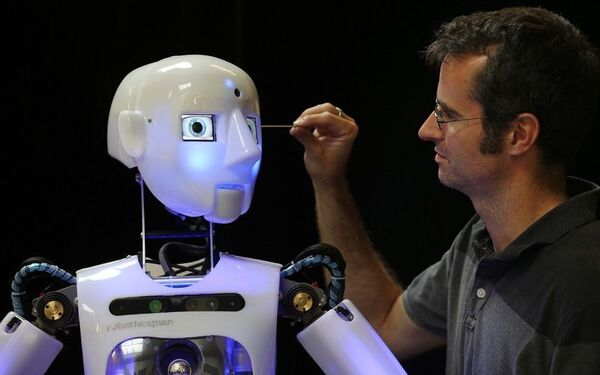

Кибернетик
Профессия
Кибернетик — это ученый и специалист, который объединяет теоретические и практические знания в области компьютерных систем, искусственного интеллекта и управления информацией. Они применяют методы математического моделирования, теорию управления и машинное обучение для решения задач — от робототехники до анализа больших данных.
В чём заключается
Занимаясь изучением закономерностей, кибернетик стремится создать общую математическую теорию управления сложными системами, а также проектирует, разрабатывает и управляет системами, основанными на современной компьютерной технологии. Кибернетик исследует, как системы (технические, биологические или социальные) обрабатывают информацию, принимают решения и адаптируются к изменениям.
Отрасли
В робототехнике и автоматизации она реализуется через создание интеллектуальных систем управления для промышленных манипуляторов, автономных дронов и беспилотного транспорта, где алгоритмы непрерывно анализируют данные сенсоров и корректируют поведение. Разрабатывают нейросети, способные не только распознавать образы, но и эволюционировать в процессе обучения, как в системах медицинской диагностики или прогнозирования финансовых рынков. Биокибернетика объединяет цифровые технологии и биологию, создавая интерфейсы "мозг-компьютер" для управления протезами или алгоритмы анализа геномных данных. В кибербезопасности кибернетические методы позволяют строить самообучающиеся системы защиты, адаптирующиеся к новым типам кибератак. Промышленная кибернетика оптимизирует сложные производственные цепочки, а экономическая — моделирует поведение рынков и управленческие решения.
Суть работы
Кибернетик проектирует "умные" системы, способные самообучаться и адаптироваться. В отличие от программиста, который пишет четкие инструкции, кибернетик создает алгоритмы, имитирующие естественные процессы — будь то управление роботом-хирургом, прогнозирование биржевых трендов нейросетью или защита данных с помощью самообновляющихся систем безопасности. Его задача — научить технологии "мыслить" в условиях неопределенности, используя математические модели, теорию управления и принципы биологических систем. Каждая разработка требует многократной проверки, ведь ошибка в алгоритме беспилотника или энергосети может иметь катастрофические последствия.
Образование
1. Высшее образование (обязательно для фундамента)
Управление в технических системах
Кибернетика и компьютерные науки
Искусственный интеллект
Биоинженерия
2. Курсы и Bootcamp’ы (для узких специализаций)
Машинное обучение
Робототехника
Анализ данных